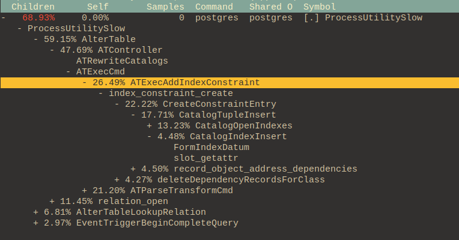

Created at: 2024-10-27
The EXCLUDE clause defines an exclusion constraint, which guarantees that if any two rows are compared on the specified column(s) or expression(s) using the specified operator(s), not all of these comparisons will return TRUE. If all of the specified operators test for equality, this is equivalent to a UNIQUE constraint, although an ordinary unique constraint will be faster. However, exclusion constraints can specify constraints that are more general than simple equality. For example, you can specify a constraint that no two rows in the table contain overlapping circles (see Section 8.8) by using the && operator. The operator(s) are required to be commutative.
CREATE TABLE circles (
c circle,
EXCLUDE USING gist (c WITH &&)
);
The following script creates a sandbox for testing an exclusion constraint.
CREATE DATABASE exclusion_test_db;
-- then connect via \c exclusion_test_db;
-- Postgres requires a GIST index for exclusion constraints.
CREATE EXTENSION IF NOT EXISTS btree_gist;
DROP TABLE IF EXISTS bookings;
CREATE TABLE bookings (
id SERIAL PRIMARY KEY,
resource_id INT NOT NULL,
start_date DATE NOT NULL,
end_date DATE NOT NULL
);
-- Add 100,000 rows to the table
INSERT INTO bookings (resource_id, start_date, end_date)
SELECT
generate_series(1, 100000) AS resource_id,
'2024-01-01'::DATE AS start_date,
'2024-01-10'::DATE AS end_date;
VACUUM ANALYZE bookings;
-- Can't book the same resource_id in overlapping dates.
ALTER TABLE bookings
ADD CONSTRAINT no_date_overlap_for_resource_id
EXCLUDE USING gist (
resource_id WITH =,
daterange(start_date, end_date, '[]') WITH &&
);
The creation of this constraint happens in two stages:
Most of the time is spent on the index creation.
Compare this with creating a unique constraint:
ALTER TABLE bookings
ADD CONSTRAINT "unique_resource_id"
UNIQUE ("resource_id");

Note that in this case the IndexCheckExclusion is not called. The code says:
/*
* In src/backend/catalog/index.c
*
* If it's for an exclusion constraint, make a second pass over the heap
* to verify that the constraint is satisfied. We must not do this until
* the index is fully valid. (Broken HOT chains shouldn't matter, though;
* see comments for IndexCheckExclusion.)
*/
if (indexInfo->ii_ExclusionOps != NULL)
IndexCheckExclusion(heapRelation, indexRelation, indexInfo);
My question is: Could this second pass over the heap happen another time? It takes a considerable amount of time (1/3 of the ATExecAddIndex execution in my machine).
What I'd like to do is:
For example, when a unique constraint is created from an existing index, we first need to create the index:
CREATE UNIQUE INDEX unique_resource_id ON bookings (resource_id);
Which produces:

Alternatively, if I had used CONCURRENTLY:

Followed by an ALTER TABLE ... USING INDEX
ALTER TABLE bookings
ADD CONSTRAINT unique_resource_id UNIQUE USING INDEX unique_resource_id;

You can see that the operation ATExecAddIndexConstraint is called. The only
type of index this operation accepts is a unique one:
/* In src/backend/commands/tablecmds.c */
/* this should have been checked at parse time */
if (!indexInfo->ii_Unique)
elog(ERROR, "index \"%s\" is not unique", indexName);
/* Note we currently don't support EXCLUSION constraints here */
if (stmt->primary)
constraintType = CONSTRAINT_PRIMARY;
else
constraintType = CONSTRAINT_UNIQUE;
Why is an EXCLUSION constraint not supported? I can't find the real explanation in the commit that added those changes
I started a proposal in the mail list here